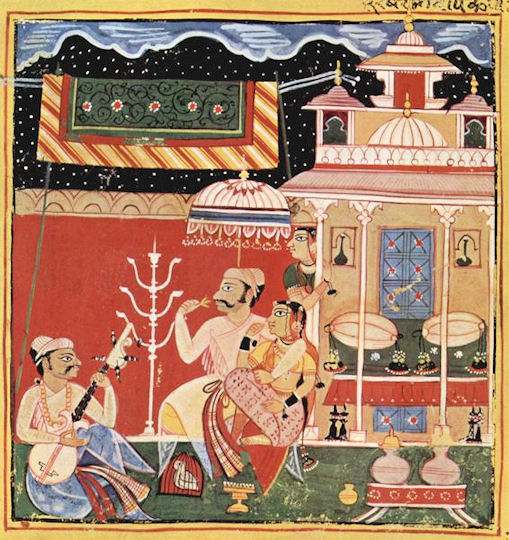
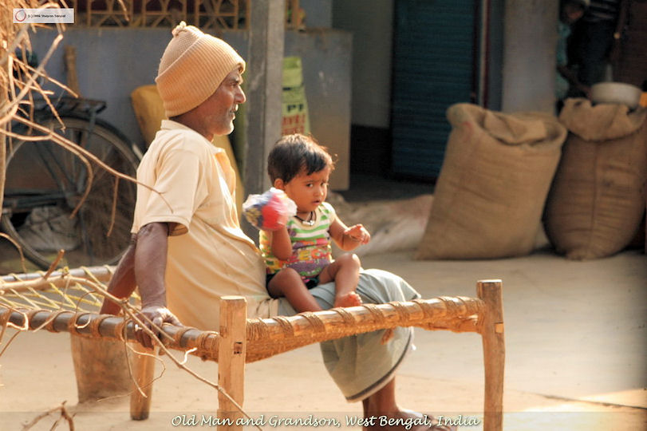

mailto:payer@payer.de
Zitierweise | cite as:
Payer, Alois <1944 - >: Sanskritkurs. -- Lösung der Übungen. -- Übungen Lektion 11 - 15. -- Fassung vom 2008-12-06. -- URL: http://www.payer.de/sanskritkurs/uebung11.htm
Erstmals hier publiziert: 2008-12-06
Überarbeitungen:
Anlass: Lehrveranstaltungen 1980 - 1984
©opyright: Dieser Text steht der Allgemeinheit zur Verfügung. Eine Verwertung in Publikationen, die über übliche Zitate hinausgeht, bedarf der ausdrücklichen Genehmigung des Verfassers
Dieser Text ist Teil der Abteilung Sanskrit von Tüpfli's Global Village Library
Falls Sie die diakritischen Zeichen nicht dargestellt bekommen, installieren Sie eine Schrift mit Diakritika wie z.B. Tahoma.
Die Devanāgarī-Zeichen sind in Unicode kodiert. Sie benötigen also eine Unicode-Devanāgarī-Schrift.
A) Übersetzen Sie untenstehende Sätze
१. ऋषिः सत्यं वदति । Der vedische Weise spricht die Wahrheit.
२. ब्राह्मणः पुत्रमिच्छति । Ein Brahmane wünscht sich einen Sohn.
३. साधुः स्वर्गं गच्छति । Ein Heiliger kommt in den Himmel.
४. ब्राह्मणो ऽनृतं न वदतीति स्मृतिः । Die Smṛti sagt, dass ein Brahmane keine Unwahrheit spricht.
५. क्षत्रियो ब्राह्मणं धर्मं पृच्छति । Ein Kṣatriya fragt den Brahmanen nach dem Dharma.
६. एवं ब्राह्मणो यज्ञेन देवं यजति । So bringt der Brahmane dem Gott ein Opfer dar.
७. पुत्रः पापं करोतीति वैश्या मन्यते । Die Vaiśyafrau meint, dass ihr Sohn Böses tut.
८. क्षत्रियः क्षत्रियेण सह युध्यते । Kṣatriya kämpft mit Kṣatriya.
९. अधर्मो ऽनृतमिति पुत्रः पापं न करोति । Da Unwahrheit Unrecht ist, begeht der Sohn keine Übeltat.
१०. अयं क्षत्रियो धर्मं रक्षति । Dieser Kṣatriya behütet den Dharma.
११. को ऽग्निं यजते । Wer verehrt das Feuer (Gott Agni) mit einem Opfer?
१२. स श्रावको बुद्धं धर्मं पृच्छति ॥ Dieser Jünger befragt den Buddha über seine Lehre.
B) Setzen Sie die Sätze von A) in Passivkonstruktion
१. ऋषिणा सत्यमुद्यते ।
२. ब्राह्मणेन पुत्र इष्यते ।
३. साधुना स्वर्गो (स्वर्गं) गम्यत इति पुत्रेण पुण्यं क्रियते ।
४. ब्राह्मणेनानृतं नोद्यत इति स्मृतिः ।
५. क्षत्रियेण ब्राह्मणो धर्मं पृच्छ्यते ।
६. एवं ब्राह्मणेन यज्ञेन देव इज्यते ।
७. पुत्रेण पापं क्रियत इति वश्यया मन्यते ।
८. क्षत्रियेण क्षत्रियेण सह युध्यते ।
९. अधर्मो ऽनृतमिति पुत्रेण पापं न क्रियते ।
१०. अनेन क्षत्रियेण धर्मो रक्ष्यते ।
११. केनाग्निरिज्यते ।
१२. तेन श्रावकेण बुद्धो धर्मं पृच्छ्यते ॥
C) Setzen Sie in den Sätzen A), wo es sinnvoll ist, Subjekt, Objekt und Prädikat in den Plural
१. ऋषयः सत्यं वदन्ति ।
२. ब्राह्मणाः पुत्रानिच्छन्ति ।
३. साधवः स्वर्गान्गच्छन्तीति पुत्राः पुण्यं कुर्वन्ति ।
४. ब्राह्मणा अनृतं न वदन्तीति स्मृतिः ।
५. क्षत्रिया ब्राह्मणान्धर्मं पृच्छन्ति ।
६. एवं ब्राह्मणा यज्ञेन देवाण्यजन्ति ।
७. पुत्राह् पापं कुर्वन्तीति वैश्या मन्यन्ते ।
८. क्षत्रियाः क्षत्रियैः सह युध्यन्ते ।
९. अधर्मो ऽनृतमिति पुत्राः पापं न कुर्वन्ति ।
१०. इमे क्षत्रिया धर्मं रक्षन्ति ।
११. के (ऽग्निं) ऽग्नीन्यजन्ते ।
१२. ते श्रावका बुद्धं धर्मं पृच्छन्ति ॥
D) Bilden Sie zu den nach C) gebildeten Sätzen die Passivkonstruktion
१. ऋषिभिः सत्यमुद्यते ।
२. ब्राह्मणैः पुत्रा इष्यन्ते ।
३. साधुभिः स्वर्गा गम्यन्त इति पुत्रैः पुण्यं क्रियते ।
४. ब्राह्मणैरनृतं नोद्यत इति स्मृतिः ।
५. क्षत्रियैर्ब्राह्मणा धर्मं पृच्छ्य्न्ते ।
६. एवं ब्राह्मणैर्यज्ञेन देवा इज्यन्ते ।
७. पुत्रैः पापं क्रियत इति क्षत्रियाभिर्मन्यते ।
८. क्षत्रियैः क्षत्रियैः सह युध्यते ।
९. अधर्मो ऽनृतमिति पुत्रैः पापं न क्रियते ।
१०. एभिः क्षत्रियैर्धर्मो रक्ष्यते ।
११. कैरग्निरिज्यते । कैरग्नय इज्यन्ते ।
१२. तैः श्रावकैर्बुद्धो धर्मं प्र्च्छ्यते ॥
Abb.:
केनाग्निरिज्यते ।
Opfer, Shiva ashram, Kothavala,
Ganeshpuri, 80 km von Mumbai (मुंबई) entfernt
[Bildquelle: Dey. --
http://www.flickr.com/photos/dey/466769475/. -- Zugriff am 2008-12-06.
--


 Creative
Comons Lizenz (Namensnennung, keine kommerzielle Nutzung, Share alike)]
Creative
Comons Lizenz (Namensnennung, keine kommerzielle Nutzung, Share alike)]
A) Übersetzen Sie ins Sanskrit mit Passivkonstruktionen:
1. Vaiśyafrauen fragen Brahmanen nach dem Dharma.
वैश्याभिर्ब्राह्मणो धर्मं पृच्छ्यते ।
2. Der Lehrer spricht ein Mantra.
गुरुणा मन्त्र उद्यते ।
3. Heilige Frauen gelangen in einen Himmel.
साध्वीभिः स्वर्ग आप्यते । स्वर्गो ऽश्यते । स्वर्गो गम्यते । स्वर्गं गम्यते ।
4. Ein vedischer Weiser tut nichts Böses.
ऋषिणा पापं न क्रियते ।
5. Brahmanen verehren als Opferpriester die Göttin mit Opfern.
ब्राह्मनैर्देवीज्यते ।
6. Die Śūdrafrau geht ins Dorf.
7. Wer sieht die Wahrheit?
केन सत्यं दृश्यते ॥
B)
1. Geben Sie mit einem Dvandva die Aufgaben aller Zweimalgeborenen an. Lösen Sie das Kompositum in Sanskrit auf.
इज्याध्ययनदानानि = इज्याध्ययनं दानं च
2. Geben Sie mit einem Dvandva die Aufgaben der Vaiśyas an. Lösen Sie das Kompositum in Sanskrit auf.
कृषिवाणिज्यपाशुपाल्यकुसीदानि = कृषीर्वाणिज्यं (वाणिज्या, वणिज्या) कुसीदं च ।
C) Übersetzen Sie:
१. श्रवणेन श्रूयते । Das Ohr hört. Mit dem Ohr hört man.
२. कर्षकैः कृष्यते । Ackerbauern pflügen.
३. श्रावकेणेश्वरो नेज्यते । Ein Buddhaanhänger opfert keinem HERRN.
४. रक्षिक्या गुरू रक्ष्यते । Das Amulett beschützt den Meister.
५. ब्राह्मणेनानृतं नोद्यते । Ein Brahmane spricht keine Unwahrheit
६. शूद्रेतरा । Itarā ist eine Śūdrafrau.
७. शिक्षा कल्पो व्याकरणं निरुक्तं छन्दो ज्योतिषमङ्गानि । Hilfswissenschaften zum Veda sind: Aussprachelehre, Ritualistik, Grammatik, Wortbedeutungslehre, Metrik und Kalenderlehre
८. आन्वीक्षिकीत्रयीवार्त्तादण्डनीतयो विद्याः ॥ Wissenschaften sind: Philosophie, Vedistik, Ökonomie und Politologie.
D) Übersetzen Sie und setzen Sie in Sanskrit Agens, Objekt und Verb in den Plural:
१. फलमश्नुते । Er bekommt eine Frucht. फलान्यश्नुवन्ते ।
२. गुरुणा सत्यमुद्यते । Der Meister spricht die Wahrheit. गुरुभिः सत्यान्युद्यन्ते ।
३. वैश्यः पशुं लभते । Der Vaiśya erhält Vieh. वैश्याः पशुंल्लभन्ते ।
४. पुत्रः पुण्यं करोति ॥ Mein Sohn tut Verdienstvolles. पुत्राः पुण्यानि कुर्वन्ति ॥
E) Verwandeln Sie die Sätze C)1-5 in Aktivkonstruktionen.
१. श्रवणं शृणोति ।
२. कर्षकाः कृषन्ति ।
३. श्रावक ईश्वरं न यजते ।
४. रक्षिका गुरुं रक्षति ।
५. ब्राह्मनो ऽनृतं न वदति ॥
Abb.: फलान्यश्नुते
Mysore = ಮೈಸೂರು
[Bildquelle: PnP!. --
http://www.flickr.com/photos/pnp/1596379612/. -- Zugriff am 2008-12-06. --


 Creative
Commons Lizenz (Namensnennung, keine kommerzielle Nutzung, keine Bearbeitung)]
Creative
Commons Lizenz (Namensnennung, keine kommerzielle Nutzung, keine Bearbeitung)]
A) Bilden Sie aus den Aktivsätzen von Lektion 7, Übung A mit dem PPP Passivsätze der Vergangenheit, bei intransitiven Verben und Verben der Bewegung Aktivsätze der Vergangenheit.
१. ब्राह्मणेन देव इष्टः । देवीष्टा । विष्णुरिष्टह् । ब्राह्मणेनाग्निरिष्टः । देवतेष्टा ।
२. गुरुणा फलं खादितम् ।
३. साधुः स्वर्गं गतः ।
४. शूद्रा नरकं गता ।
५. शूद्रो जितः ॥
B) Bilden Sie die entsprechenden PPPs zu den Verbformen von Lektion 10, Übung A. Beachten Sie dabei, dass einer Form wie sṛjati PPPs in allen drei Geschlechtern entsprechen.
C) Setzen Sie die Sätze von Lektion 10, Übung C passiv in die Vergangenheit.
1. brāhmaṇo devīm yajati. ब्राह्मणो देवीं यजति | ब्रामणेन देवीष्टा ।
2. sādhuḥ svargaṃ gacchati. साधुः स्वर्गं गच्छति | साधुः स्वर्गं गतः ।
3. śūdraṃ jayati. शूद्रं जयति | शूद्रो जितः ।
4. guruḥ phalāni khādati. गुरुः फलानि खादति | गुरुणा फलानि खादितानि ।
5. gurūñchṛṇoti. गुरूञ्छृणोति | ग्रुरवः श्रुताः ।
6. ko 'gniṃ paśyati. को ऽग्निं पश्यति | केनाग्निर्दृष्टः ।
7. ayaṃ kavirmantraṃ smarati. अयं कविर्मन्त्रं स्मरति | अनेन कविना मन्त्रः स्मृतः ।
8. iyaṃ devī kṣatriyā rakṣati. इयं देवी क्त्रिया रक्षति | अनया देव्या क्षत्रिया रक्षिताः ।
9. kṣatriyā viṣṇuṃ yajante. क्षत्रिया विष्णुं यजन्ते | (2 Möglichkeiten) क्षत्रियैर्विष्णुरिष्टः । क्षत्रियाभिर्विष्णुरिष्टः ।
10. brāhmaṇo 'gniṃ karoti. ब्राह्मणो ऽग्निं करोति | ब्राह्मणेनाग्निः कृतः ।
11. vaiśyā imaṃ grāmaṃ gacchanti. वैश्या इमं ग्रामं गच्छन्ति | वैश्या इमं ग्रामं गताः ।
12. ete gurūṃstu śṛṇvanti. एते गुरूंस्तु शृण्वन्ति | एतैर्गुरवस्तु श्रुताः ।
13. sādhuḥ svargamāpnoti. साधुः स्वर्गमाप्नोति | साधुना स्वर्ग आप्ताः ।
14. brāhmāṇāḥ somaṃ sunvanti. ब्राह्मणाः सोमं सुन्वन्ति | ब्राह्मणैः सोमः सुतः ।
15. paśūṃllabhate. पशूल्ंलभते | पशवो लब्धाः ।
16. ke yodhāḥ kṣatriyaiḥ saha yudhyante. के योधाः क्षत्रियैः सह युध्यन्ते | कैर्योधैः क्षत्रियैः सह युद्धम् ।
Abb.: ब्राह्मणो ऽग्निं करोति |
Modernes Feuerbohren für ein Opfer, Shiva ashram,
Kothavala, Ganeshpuri, 80 km von Mumbai (मुंबई) entfernt
[Bildquelle: Dey. --
http://www.flickr.com/photos/dey/466067768/in/set-72157600010457470/. --
Zugriff am 2008-12-06. --


 Creative
Comons Lizenz (Namensnennung, keine kommerzielle Nutzung, Share alike)]
Creative
Comons Lizenz (Namensnennung, keine kommerzielle Nutzung, Share alike)]
A) Übersetzen Sie und verwandeln Sie in aktive Präsenssätze:
१. अग्निना गृहं दग्धम् । Ein Feuer hat das Haus verbrannt. अग्निर्गृहं दहति ।
२. बुद्धेन सत्यं बुद्धम् । Buddha ist zur Wahrheit erwacht. Buddha hat die Wahrheit erkannt. बुद्धः सत्यं बुध्यते / बोधति ।
३. बोध्या गौतमो मुक्तः । Die Erkenntnis hat Gautama erlöst. Durch die Erkenntnis wurde Gautama erlöst. बोधिर्गौतमं मुञ्चति ।
४. शूद्रा मूढाः । (2 Möglichkeiten) Die Śūdras / Śūdrafrauen sind verblendet. शूद्रा मुह्यन्ति ।
५. ब्राह्मणेन मोक्ष इष्टः । Der Brahmane wünschte Erlösung. ब्राह्मणो मोक्षमिच्छति ।
६. रामेण पुण्यं कृतम् । Rāma tat ein verdienstvolles Werk. Rāma tat Verdienstliches. रामः पुण्यं करोति ।
७. ऋषिभिः सत्यमेवोदितमित्युदितम् । Es ist gesagt, dass vedische Weise nur die Wahrheit gesagt haben. ऋषयः सत्य्मेव वदन्तीति वदन्ति ।
८. धर्मेण स्वर्गं नीतम् । Der Dharma hat in einen Himmel geführt. धर्मः स्वर्गं नयति ।
९. साधुनाधर्मो न कृतम् । Ein Heiliger hat nichts Unrechtes getan. साधुरधर्मं न करोति ।
१०. मन्त्रेण मोक्षो लब्धः । Mittels des Mantra hat man Erlösung erlangt. मन्त्रेण मोक्षं लभन्ते ।
११. कया रक्षिकयेयं बाला रक्षिता ॥ Was für ein Amulett hat dieses Mädchen beschützt? का रक्षिका बालां रक्षति ॥
B) Übersetzen Sie und verwandeln Sie in Passivsätze der Vergangenheit
१. राम इष्टमपि मोक्षं न लभते । Obwohl Rāma Erlösung wünscht, erlangt er sie nicht. रामेणेष्टो ऽपि मोक्षो न लब्धः ।
२. योज्ञो न मुञ्चति । Opfer erlöst nicht. यज्ञेन न मुक्तः ।
३. साधवो देवान्स्मरन्ति । Heilige vergegenwärtigen sich die Götter. साधुभिर्देवाः स्मृताः ।
४. पुण्यवान्पुत्रो देवान्यजते । Der tugendsame Sohn opfert den Göttern. पुण्यवता पुत्रेण देवा इष्टाः ।
५. सुखवान्क्षत्रियो धर्मं रक्षति । Der glückliche Kṣatriya hütet den Dharma. सुखवता क्षत्रियेण धर्मो रक्षितः ।
६. पुत्रवान्नरकं न गच्छति । Wer Söhne hat, kommt in keine Hölle. पुत्रवान्न्रकं न गतः ।
७. धर्मवती पापं न करोतीति गुरुर्वदति । Der Meister sagt, dass eine fromme Frau nichts Böses tut. धर्मवत्या पापं न कृतमिति गुरुणोदितम् ।
८. बुद्धिमन्तः सत्यवतो धर्मं प्र्च्छन्ति । Einsichtige befragen die, die die Wahrheit besitzen, über den Dharma. बुद्धिमद्भिः सत्यवन्तो धर्मं पृष्टाः ।
९. धर्मवन्तः फलवत्पुण्यं कुर्वन्ति । Religiöse Personen tun Verdienstvolles, das Frucht bringt. धर्मवद्भिः फलवत्पुण्यं कृतम् ।
१०. ब्राह्मणा गुणवतः पुत्रानिच्छन्ति । Brahmanen wünschen sich vorzügliche Söhne. ब्राह्मणैर्गुणवन्तः पुत्रा इष्टाः ।
११. कयृग्वेदं शृण्वन्ति । Welche Männer hören den Ṛgveda? कैरृग्वेदः श्रुतः ।
१२. किमीश्वरः सृजति । Was erschafft der HERR? किमीश्वरेण सृष्टम् ।
१३. साधुः कृतं पापं सहते । Ein Heiliger erträgt ihm zugefügtes Übel. साधुना कृतं पापं सोढम् ।
१४. पार्थिवो धनमिच्छतीति नीचा मन्यन्ते । Niedrige denken, dass Herrscher Reichtum wünschen. पार्थिवेन धनमिष्टमिति नीचैर्मतम् ।
१५. नैवासुरो जयतीत्यृषयः पश्यन्ति । Die vedischen Weisen sehen, dass der Dämon auf keinen Fall siegt. नैवासुरेण जितमित्यृषिभिर्दृष्टम् ।
१६. ब्राह्मणाः किं पिबन्ति खादन्ति च ॥ Was essen und trinken Brahmanen? ब्राह्मणैः किं पीतं खादितं च ॥
Abb.: अग्निर्गृहं दहति
।
Bangalore = ಬೆಂಗಳೂರು
[Bildquelle: lecercle. --
http://www.flickr.com/photos/lecercle/2471082860/. -- Zugriff am 2008-12-06.
--


 Creative
Commons Lizenz (Namensnennung, keine kommerzielle Nutzung, Share alike)]
Creative
Commons Lizenz (Namensnennung, keine kommerzielle Nutzung, Share alike)]
A) Übersetzen Sie folgende Sätze.
B) Setzen Sie die Sätze Übung A) ins Passiv
C) Bilden Sie zu den Sätzen Übung A) eine PPP-Konstruktion
१. रामो मार्गेण ग्रामं गच्छति । Rāma geht auf dem Weg ins Dorf. रामेण मार्गेण ग्रामं गम्यते । रामेण मार्गो ग्रामं गम्यते । रामो मार्गेण ग्रामं गतः । रामेण मार्गो ग्रामं गतम् ।
२. नरा धनेन सुखमिच्छन्ति । Menschen wünschen sich Glück durch Reichtum. नरैर्धनेन सुखमिष्यते । सुखमिष्टम् ।
३. नरः पुत्रेण नगरं पद्यते । Der Mann geht mit seinem Sohn in die Stadt. नरेण पुत्रेण (सह) नगरं पद्यते । नरः पुत्रेण (सह) नगरं पन्नः ।
४. देवो लोकान्सृजति । Gott erschafft die Welten. देवेन लोकाः सृज्यन्ते । सृष्टाः ।
५. बाला जलं पिबति । Das Mädchen trinkt Wasser. बालया जलं पीयते । पीतम् ।
६. कवयो धनं लुभ्यन्ति । Dichter begehren Reichtum. कविबिर्धनं लुभ्यते । लुब्धम् ।
७. बलवान्क्षत्रियः शूद्राञ्जयति । Der mächtige Kṣatriya besiegt die Śūdras. बल्वता क्षत्रियेण शत्रवो जीयन्ते । जिताः ।
८. गुणवान्द्विष्टमपि शत्रुं न युध्यते । Jemand Tugendhaftes bekämpft seinen Feind nicht, auch wenn dieser ihm verhasst ist. गुणवता द्विष्तो ऽपि शत्रुर्न युध्यते । युद्धः ।
९. अधर्मः क्रोधश्च द्वेषश्च लोभश्चेत्यृषिर्वदति । Der vedische Weise sagt, das Zorn, Hass und Gier Unrecht sind. अधर्मः क्रोधश्च द्वेषश्च लोभश्चेत्यृषिणोद्यते । लोभश्चेत्यृषिणोदितम् ।
१०. बाला अन्नेन बलमाप्नुवन्ति । Knaben werden durch Essen stark. बालैरन्नेन बलमाप्यते । बालाभिरन्नेन बलमाप्यते । बलमाप्तम् ।
११. बुद्धिमन्तः सत्येन मोक्षं लभन्ते । Einsichtige erlangen durch die Wahrheit die Erlösung. बुद्धिमद्भिः सत्येन मोक्षो लभ्यते । लब्धः ।
१२. इमाः साध्व्यः पापं सहन्ते । Diese heiligen Frauen ertragen das Übel. इमाभिः साध्वीभिः पापं सह्यते । सोढम् ।
१३. कां देवतामृषिः पश्यति । Welche Gottheit sieht der Ṛṣi? का देवतर्षिना दृश्यन्ते । दृष्टा ।
१४. कान्देवान्ब्राह्मणक्षत्रियवैश्या यजन्ते । Welchen Göttern opfern Brahmanen, Katriyas und Vaśyas? के देवा ब्राह्मणक्षत्रियवैश्यैरिज्यन्ते । ब्राह्मणक्षत्रियवैश्यैरिष्टाः ॥
D) Aus welchen Lautverbindungen können folgende Sandhiformen entstanden sein? Geben Sie alle Möglichkeiten an:
1. -a vor Vokal (außer a-): -as
2. -ā- : -a + -a/-ā -ā + a-/ā-
3. -ā vor Vokal: -ās
4. -ā vor stimmhaften Konsonanten: -ās
5. -ī-: -i + i-/ī-, -ī + i-/-ī
6. -ū-: -u/-ū + u-/ū-
7. -ṝ-: -ṛ/-ṝ + ṛ-/ṝ-
8. -e-: -a/-ā + i-/ī-
9. -e vor Avagraha: -e + a-
10. -o-: -a/-ā + u-/ū-
11. -o vor Avagraha: -o
12. -o vor stimmhaften Konsonanten -as
13. -ai-: -a/-ā + e-/ai-
14. -au-: -a/-ā + e-/ai-
15. -y vor Vokal: -i/-ī
16. -v vor Vokal: -u/-ū
17. -r vor Vokal: -ṛ/-ṝ
18. -ay vor Vokal: -e
19. -av vor Vokal: -o
20. -ar-: -a/-ā + ṛ-/ṝ-
21. -ir vor Vokal oder stimmhaftem Konsonanten: -is
22. -īr vor Vokal oder stimmhaftem Konsonanten: -īs
23. -ur vor Vokal oder stimmhaftem Konsonanten: -us
24. -ūr vor Vokal oder stimmhaftem Konsonanten: -ūs
25. -er vor Vokal oder stimmhaftem Konsonanten: -es
26. -or vor Vokal oder stimmhaftem Konsonanten: -os
27. -air vor Vokal oder stimmhaftem Konsonanten: -ais
28. -aur vor Vokal oder stimmhaftem Konsonanten: -aus
29. -ñj-: -n + j-
30. -ñś-: -n + ś
31. -ñch-: -n + ch-
32. -ṇḍ(h)-: -n + ḍ(h)-
33. -śc-: -s + c-
34. -ṣṭ-: -s + t-
35. -st(h)-: -s + t(h)-
36. Anusvara vor Konsonant: -m
37. -ṃśc-: -n + c-
38. -ṃṣṭ-: -n + ṭ-
39 -mst-: -n + t-
E) Übersetzen Sie ins Sanskrit:
1. Die Göttin war erzürnt. देवी कुपिता । देव्या कुपितम्
2. Śūdras sind in einen Himmel gelangt. शूद्रैः स्वर्ग आप्तः । स्वर्गो ऽष्टः ।
3. Die Bauern sind den Weg gegangen. कर्षकैर्मार्गो गतः । कर्षका मार्गं गताः ।
4. Durch die Buddhalehre wurden die Leute befreit. धर्मेण जना मुक्ताः ।
5. Der Sohn tanzte. पुत्रेण नृत्तम् ।
6. Das Amulett hat den Lehrer beschützt. रक्षिकया गुरू रक्षितः ।
7. Ein Brahmane hat keine Unwahrheit gesagt. ब्राह्मणेनानृतं नोदितम् ।
8. Śūdrafrauen haben die Göttin mit Opfern verehrt. शूद्राभिर्देवीष्टा ।
9. Buddha ist zur Wahrheit erwacht = Buddha hat die Wahrheit erkannt. बुद्धेन सत्यं बुद्धम् । बुद्धः सत्यं बुद्धः ।
10. Die vedischen Weisen haben die Śruti gehört. ऋषिभिः श्रुतिः श्रुता ।
11. Die Opferpriester haben den Soma gepresst. यजकैः सोमः सुतः ॥
Abb.: बाला जलं पिबति ।
बालया जलं पीयते ।
सरोजिनी नगर, Delhi =
दिल्ली
[Bildquelle: Prato9x. --
http://www.flickr.com/photos/55163494@N00/209096948/. -- Zugriff am
2008-12-06. --


 Creative
Commons Lizenz (Namensnennung, keine kommerzielle Nutzung, keine Bearbeitung)]
Creative
Commons Lizenz (Namensnennung, keine kommerzielle Nutzung, keine Bearbeitung)]
Übersetzen Sie folgende Sprichwörter und lernen Sie sie auswendig:
निचो वदति न कुरुते
वदति न साधुः करोत्येव ॥१॥
Jemand Niedres spricht und handelt nicht, jemand Gutes spricht nicht, sondern handelt.
शीलं नरस्य भूषणम् ॥२॥
Tugend ist des Menschen Schmuck.
सत्येन जनानां सुखं भवति ॥३॥
Durch Wahrheit wird den Menschen Glück.
पापा नराः स्वर्गं न लभन्ते ॥४॥
Böse Menschen kommen nicht in den Himmel.
सत्यं लोकस्य दीपः ॥५॥
Wahrheit ist das Licht der Welt.
A) Bilden Sie den Genetiv Singular und Plural zu folgenden Wörtern. Geben Sie Bedeutung und Geschlecht der Wörter an:
१. अनृत : n. Unwahrheit अनृतस्य अनृतानाम्
२. ऋषि : m. vedischer Weiser ऋषेः ऋषीणाम्
३. पाद : m. Fuß पादस्य पादानाम्
४. बुद्धि : f. Erkenntnis बुद्धेः बुद्ध्याः बुद्धीनाम्
५. गुरु : m. Meister गुरोः गुरूणाम्
६. स्वर्ग : m. Himmel स्वर्गस्य स्वर्गाणाम्
७. नगर : n. Stadt नगरस्य नगराणाम्
८. धेनु : f. Kuh धेनोः धेन्वाः धेनूनाम्
९. द्विज : m. Zweimalgeborener द्विजस्य द्विजानाम्
१०. मुक्ता : f. die Erlöste मुक्तायाः मुक्तानाम्
११. विद्या : f. Wissen, Wissenschaft विद्यायाः विद्यानाम्
१२. वर्ण : m. Stand वर्णस्य वर्णानाम्
१३. द्विजाति : 3 zweimalgeboren द्विजातेः द्विजात्याः द्विजातीनाम्
१४. रूप : n. Form रूपस्य रूपाणाम्
१५. प्रतिग्रह : m. Entgegennnehmen प्रतिग्रहस्य प्रतिग्रहाणाम्
१६. सोढ : 3 ertragen सोढस्य सोढायाः सोढानाम्
१७. नायिका : f. Geliebte नायिकायाः नयिकानाम्
१८. साध्वी : f. Heilige साध्व्याः साध्वीनाम्
१९. अग्नि : m. Feuer अग्नेः अग्नीनाम्
२०. वैश्या : f. Vaiśyafrau वैश्यायाः वैश्यानाम्
२१. लोक : m. Welt, Leute लोकस्य लोकानाम्
२२. उक्ति : f. Ausspruch उक्तेः उक्त्याः उक्तीनाम्
२३. शत्रु : m. Feind शत्रोः शत्रूणाम्
२४. सुखवन्त् : 3 glücklich सुखवतः सुखवताम् सुखवत्याः सुखवतीनाम्
२५. पुत्रवती : f. eine Frau mit einem oder mehreren Söhnen पुत्रवत्याः पुत्रवतीनाम्
२६. जल : n. Wasser जलस्य जलानाम्
२७. मार्ग : m. Weg मर्गस्य मर्गाणाम्
२८. मोक्ष : m. Befreiung, Erlösung मोक्षस्य मोक्षाणाम्
२९. शूद्रा : f. Śūdrafrau शूद्रायाः शूद्राणाम्
३०. अन्न : n. Speise, Essen अन्नस्य अन्नानाम्
३१. साधु : m. Heiliger साधोः साधनाम्
३२. नीति : f. Führung नीत्याः नीतीनाम्
३३. योध : m. Kämpfer, Soldat योधस्य योधानाम्
३४. सत्यवन्त् : 3 wahrhaftig सत्यवतः सत्यवताम् सत्यवत्याः सत्यवतीनाम्
३५. लाभ : m. Gewinn लाभस्य लाभानाम्
३६. मोह : m. Verwirrung, Verblendung मोहस्य मोहानाम्
३७. गति : f. Gang, Ziel गतेः गत्याः गतीनाम्
३८. प्रश्न : m. Frage प्रश्नस्य प्रश्नानाम्
३९. सृष्टि : f. Schöpfung सृष्तेः सृष्ट्याः सृष्टीनाम्
४०. नेत्र : n. Auge नेत्रस्य नेत्राणाम्
४१. गुरुता : f. Meisterschaft गुरुतायाः गुरुतानाम्
४२. ईश्वर : m. der HERR ईश्वरस्य ईश्वराणाम्
४३. कारण : n. Ursache कारणस्य कारणानाम्
४४. कृत : 3 getan कृतस्य कृतानाम् कृतायाः कृतानाम्
४५. धर्मवन्त् : 3 gerecht, religiös धर्मवतः धर्मवताम् धर्मवत्याः धर्मवतीनाम्
४६. युद्ध : 3 bekämpft युद्धस्य युद्धानाम् युद्धायाः युद्धानाम्
४७. दर्शन : n. Sehen, Erscheinung दर्शनस्य दर्शनानाम्
४८. धातु : m. Element, Verbalwurzel धातोः धातूनाम्
४९. गूढा : f. eine Verborgene गूढायाः गूढानाम्
५०. ईष्टा (2 Bedeutungen): f. eine Erwünschte, eine Geopferte इष्टायाः इष्टानाम्
५१. उदित : 3 gesagt उदितस्य उदितायाः उदितानाम्
५२. इदम् : 3 dieses अस्य एषाम् अस्याः आसाम्
५३. किम् : 3 was कस्य केषाम् कस्याः कासाम्
B) Übersetzen Sie:
१. ब्राह्मणस्य पुत्रो ब्राह्मण्या ग्रामं गतः । (2 Möglichkeiten) Der Sohn des Brahmanen ist ins Dorf der Brahmanin gegangen. Der Sohn des Brahmanen ist mit der Brahmanin ins Dorf gegangen.
२. यज्ञस्याग्निनान्नं दग्धम् । Das Opferfeuer hat die Speise verbrannt.
३. बुद्धः स्तयस्य बुद्ध्या मुक्तः । Buddha wurde durch die Erkenntnis der Wahrheit erlöst.
४. अधर्मो ऽनृतस्य वदनमित्यृषयो वदन्ति । Die vedischen weisen sagen, dass Unwahrheit sprechen Unrecht ist.
५. नरा देवानां यज्ञैर्न मुच्यन्ते । Die Menschen werden durch Opfer an Götter nicht erllöst.
६. बलवन्तः क्षत्रियाः शत्रूणां धनवन्ति नगराणि जयन्ति । Die mächtigen Kṣatriyas erobern die reichen Städte der Feinde.
७. कवेरुक्तिं शृण्वन्ति । Sie hören den Spruch des Dichters.
८. कविर्देव्याः कृतं वदति । Der Dichter berichtet die Tat der Göttin.
९. द्विजाः पशोर्लाभमिच्छन्ति । Zweimalgeborene wünschen sich, Vieh zu bekommen.
१०. रामः पुण्यवतो गुरोर्मन्त्रस्य स्मरति । Rāma erinnert sich an das Mantra des tugendreichen Meisters.
११. अयं बालः कस्याः पुत्रः । Wessen (f.) Sohn ist diese Bub?
१२. केषामिमानि गृहाणि । Wem gehören diese Häuser?
१३. कस्यान्नमनेनर्षिणेष्टम् । Wessen Speise hat dieser vedische Weise geopfert?

Abb.: नायकश्च नायिका च
Rāgamālā, Dīpak Rāgā, um 1605
[Bildquelle: Wikipedia, Public domain]
Lösen Sie folgende Komposita als Tatpuruṣa in Sanskrit auf und geben Sie eine deutsche Übersetzung. Geben Sie jeweils alle Auflösungen und Übersetzungen, die Ihnen möglich erscheinen. Geben Sie auch an, um welchen Kasus und welche Zahl es sich beim Gesamtkompositum handelt.
१. देवेन्द्रस्य । देवानामिन्द्रस्य Des Götterfürsten
२. दुःखदग्धा । दुःखेन दग्धा eine von Leid verbrannte Frau
३. मोक्षधर्मः । मोक्षस्य धर्मः die Lehre von der Erlösung, das Gesetz der Erlösung
४. अन्नजातानि । अन्नेन जातानि । अन्नस्य जातानि von Speise Hervorgebrachtes, Arten des Essens
५. गृहकरणम् । गृहस्य करणम् Hausarbeit
६. शूद्रकृतेन । शूद्रस्य कृतेन । शूद्राणां कृतेन durch Śūdrawerk
७. ईश्वरपूजा । ईश्वरस्य पूजा Gottesdienst
८. देवेश्वरः । देवानामीश्वरः HERR der Götter
९. क्षत्रिययज्ञम् । क्षत्रियस्य यज्ञम् । क्षत्रियाणां यज्ञम् Opfer (Akkusativ) der Kaṣatriyas / des Kṣatriya, Opfer für Kṣatriyas / einen Kṣatriya
१०. वैश्यभावेन । वैश्यस्य भावेन । वैश्यानां भावेन durch Vaiśyawesen
११. देवगुरोः । देवानां गुरोः । देवस्येव् गुरोः । देवस्यैव गोरोः des Götterlehrers, des göttergleichen Lehrers, des göttlichen Lehrers
१२. धनलोभः॥ धनस्य लोभः । धनानां लोभः materieller Gewinn
१३. गृहदासी । गृहस्य दासी Hausmagd
१४. दुःखमोहः । दुःखस्य मोहः Verblendung über das Leiden, Verwirrung durch Leiden
१५. ग्रामेश्वरम् । ग्रामस्येश्वरम् । ग्रामाणामीश्वरम् der Dorfherren
१६. नगरजनाः । नगरस्य जनाः । नगराणां जनाः Stadtvolk, Städter
१७. यज्ञकालस्य॥ यज्ञस्य कालस्य । जज्ञानां कालस्य des rechten Zeitpunkts für das Opfer / für Opfer, der Zeit ...
१८. देवगृहाणि । देवस्य गृहाणि । देवाणां गृहाणि Gotteshäuser
१९. देवपुत्राणाम् । देवानां पुत्राणाम् der Göttersöhne
२०. पश्विष्टिः । पशोरिष्टिः । पशूनामीष्टिः Tieropfer
२१. स्मृत्युक्तम् । स्मृत्योक्तम् । स्मृतेरुक्तम् । स्मृत्या उक्तम् Spruch der heiligen Überlieferung
२२. गुरुगृहम् । गुरोर्गृहम् । गुरूणां गृहम् Haus des Meisters / der Meister
२३. सोमयज्ञेन । सोमस्य यज्ञेन durch ein Somaopfer
२४. स्वर्गगताः । स्वर्गं गताः in den Himmel Gekommene
२५. सुखप्रश्नम् । सुखस्य प्रश्नम् सुखं प्रश्नम् die (Akk.) Frage nach dem Glück, Frage nach dem Wohlergehen, Frage nach der Befindlichkeit, leichte Frage
२६. पशुधर्मः । पशोर्धर्मः । पशूनां धर्मः das Gesetz des Viehs, viehisches Verhalten
२७. स्वर्गलोकः । स्वर्गाणां लोकः । स्वर्ग एव लोकः Himmelswelt, Welt der Himmel
२८. ऋषियज्ञैः । ऋषेर्यज्ञैः । ऋषीणां यज्ञैः durch Opfer vedischer Weiser / des vedischen Weisen
२९. तत्कालम् । तस्य कालम् । त्स्याः कालम् । तेषां कालम् । तासां कालं Zeit (Akkusativ) dafür, der (rechte) Zeitpunkt dafür
३०. सत्यवदनम् । स्त्यस्य वदनम् Wahrheitsrede, Sprechen der Wahrheit
Abb.: गृहकरणम्
Kerala (കേരളം)
[Bildquelle: sallylondon. --
http://www.flickr.com/photos/sallylondon/141012470/. -- Zugriff am
2008-12-06. --


 Creative
Commons Lizenz (Namensnennung, keine kommerzielle Nutzung, keine Bearbeitung)]
Creative
Commons Lizenz (Namensnennung, keine kommerzielle Nutzung, keine Bearbeitung)]
१. देवतागृहम् । देवताया गृहम् । देवतानां गृहम् Haus der weiblichen Gottheit(en)
२. देवीस्तोत्रम् । देव्याः स्तोत्रम् Hymne an die Göttin
३. ब्राह्मणगृहम् । ब्राह्मणस्य गृहम् । ब्राह्मणानां गृहम् Brahmanenhaus
४. वैश्यापुत्राः । वैश्यायाः पुत्राः । वैश्यानां पुत्राः Söhne einer Vaiśyafrau / Söhne von VaiXyafrauen
५. शूद्रधर्मः । शूद्राणां धर्मः Śūdradharma, Śūdrarecht
६. अग्निगृहम् । अग्नेर्गृहम् Feuerhaus
७. साधुगता । साधुं गता । साधून्गता eine Frau, die zum Heiligen / zu Heiligen gegangen ist
८. सत्यवचनेन । सत्यस्य वचनेन । सत्येनैव वचनेन Durch Wahrheitswort, durch wahre Rede
९. धर्मयज्ञानाम् । धर्मस्य यज्ञानाम् vorschriftsgemäßer Opfer
१०. सत्यधर्मः । सत्यस्य धर्मः । सत्यमेव धर्मः Gesetz der Wahrheit, Gesetz, das aus Wahrheit besteht
११. अनृतवदनस्य । अनृतस्य वदनस्य des Sprechens von Unwahrheit, der Lüge
१२. देवीदासः । देव्या दासः Diener / Sklave der Göttin
१३. द्विजदासान् । द्विजस्य दासान् । द्विजाणां दासान् । द्विजानेव दासान् die (Akk.) Diener von / eines Zweimalgeborenen, Sklaven, die Zweimalgeborene sind
१४. अग्निदग्धम् । अग्निना दग्धम् । अग्नेर्दग्धम् von Feuer verbranntes
१५. साधुवादः । साधोर्वादः । साधूनां वादः Rede des Heiligen / der Heiligen
१६. बालमृगः । बाल एव मृगः ein junges Wild
१७. धनसर्गः । धन्स्य सर्गः Loslassen vom Reichtum, Schöpfung des Reichtums
१८. अन्नद्वेषम् । अन्नस्य देवेषम् den Ekel vor Speise
१९. देवदेवम् । देवानां देवम् den Gott der Götter
२०. देवप्रश्नेन । देवस्य प्रश्नेन । देवानां प्रश्नेन durch die Frage nach einem Gott / Göttern, durch die Frage des Gottes / der Götter
२१. गृहजनानाम् । गृहस्य जनानाम् der Hausbewohner
२२. गुरुपूजायाः । गुरोः पूजायाः der Verehrung des Meisters, der Verehrung durch den Meister
२३. गुरुगतैः । गुरुं गतैः durch solche, die zum Meister gegangen sind
२४. स्वर्गमार्गेण । स्वर्गस्य मार्गेण । स्वर्गं मार्गेण auf dem Weg zum Himmel, auf dem Himmelsweg
२५. नरकदेवतया । नरकस्य देवतया । नरकाणां देवतया durch die Höllengottheit
२६. गृहेश्वरः । गृहस्येश्वरः Haustyrann
२७. ग्रामधर्मः । ग्रामस्य धर्मः । ग्रामाणां धर्मः Dorfrecht
२८. देवीपूजाम् । देव्याः पूजाम् die (Akk.) Verehrung der Göttin
२९. देवदर्शनम् । देवस्य दर्शनम् । देवानां दर्शनम् das Sehen Gottes, Gotteserscheinung
३०. देवपादान् । देवस्य पादान् । देवानां पादान् die (Akk.) vielen Füße Gottes, die Füße der Götter (hat ein Gott nur zwei Füße müsste das Kompositum im Dual stehen)
३१. धनजाता । धनेन जाता । धनस्य जाता eine durch Reichtum Hervorgebrachte, Dividende
३२. बालभावेन । बालस्य भावेन durch das Kind-Sein
३३. लोकगुरोः । लोकस्य गुरोः । लोकानां गुरोः des Meisters der Welt / der Welten
३४. देवपुत्रः । देवस्य पुत्रः । देव एव पुत्रः Göttersohn, göttlicher Sohn
३५. देवमार्गम् । देवस्य मार्गम् । देवं मार्गम् । देवानां मार्गम् Götterweg, Weg zum Gott / zu den Göttern
३६. स्वर्गसुखम् । स्वर्गस्य सुखम् । स्वर्गाणां सुखम् Himmelsglück, himmlisches Glück
३७. सोमसुतिः । सोमस्य सुतिः Somapressung
३८. देवपूजायाः । देवानां पूजायाः । देवस्य पूजायाः der Verehrung des Gottes / der Götter / von Göttern
३९. लोकधर्मेण । लोकस्य धर्मेन durch das Gesetz der Welt, durch das Gesetz der Leute, durch die Religion der Leute
४०. देवजनाः । देवानां जनाः Göttervolk, Götter
४१. पापलोकः । पापस्य लोकः । पापो लोकः die Welt des Übels, die böse Welt, de bösen Leute
४२. पुण्यफलानि । पुण्यस्य फलानि Früchte verdienstvollen Tuns
४३. सत्यवादः सत्यस्य वादः । सत्यमेव वादः Wahrheitsrede, wahre Rede
४४. ऋषिपुत्रः । ऋषेर्पुत्रः Sohn eines vedischen Weisen
४५. पुत्र्पुत्राः । पुत्रस्य पुत्राः । पुत्राणां पुत्राः Sohnessöhne, Söhne des Sohnes / der Söhne, Enkel
४६. धर्मवादः । धर्मस्य वादः । धर्म एव वादः Rede über den Dharma, religiöse Rede, Predigt
४७. देवलोकम् । देवानां लोकम् die (Akk.) Götterwelt
४८. यज्ञेश्वरः । यज्ञस्येश्वरः । यज्ञानामिश्वरः Opferherr
४९. ग्रामदेवता । ग्रामस्य देवता । ग्रामानां देवता Dorfgottheit
५०. दुःखलोकः । दुःखस्य लोकः । दुःखो लोको Welt des Leidens, leidvolle Welt
५१. देवशत्रुणा । देवानां शत्रुणा durch den Feind der Götter
५२. क्षत्रियधर्मः । क्षत्रियाणां धर्मः Kṣatriyadharma
५३. द्विजेन्द्रः । द्विजानामिन्द्रः । द्विज इन्द्रः Fürst der Zweimalgeborenen, zweimalgeborener Fürst
५४. अग्निकृतम् । अग्निना कृतम् । अग्नेर्कृतम् vom Feuer bewirktes, Tat des Feuers, Feuers Werk
५५. साधूक्तानि । साधुनोक्तानि । साधुभिरुक्तानि । साधोरुक्तानि । साधूनामुक्तानि । साधून्युक्तानि Aussprüche des Heiligen / von Heiligen, gute Aussprüche
५६. ब्राह्मणभावेन । ब्राह्मणस्य भावेन durch das Brahmane-Sein
५७. देवधर्मः । देवानां धर्मः Dharma der Götter, Götterdharma
५८. गृहदेवता । गृहस्य देवता Hausgottheit
५९. कारुकुशीलवकृतम् । कारुभिः कुशीलवैश्च कृतम् । कारूणां कुशीलवानां च कृतम् Werk von Handwerkern und Schaustellern
६०. द्विजातिशुश्रूषया । द्विजातीनां शुश्रूषया durch Gehorsam von Zweimalgeborenen, durch Gehorsam gegenüber Zweimalgeborenen

Abb.: पुत्रपुत्रः
West Bengal (পশ্চিমবঙ্গ)
[Bildquelle: Shayan (USA). --
http://www.flickr.com/photos/ssanyal/347789405/. -- Zugriff am 2008-12-06.
-- Creative
Commons Lizenz (Namensnennung)]
Creative
Commons Lizenz (Namensnennung)]
A) Übersetzen Sie das Sprichwort zu Beginn der Lektion
गुरुशुश्रूषया विद्या
पुष्कलेन धनेन वा ।
अथवा विद्यया विद्या
चतुर्थी नैव विद्यते ॥
Wissen gibt es durch Gehorsam gegenüber einem Lehrer oder für üppig viel Geld oder im Austausch gegen Wissen. Eine vierte Möglichkeit gibt es nicht.
B) Lösen Sie folgende Tatpuruṣa auf:
१. बलकृतः । बलेन कृतः ein gewalttätiger
२. बालधनस्य । बालस्य धनस्य des Eigentums eines Minderjährigen
३. नरकाकम् । काक इव नरम् । नर एव काकम् einen Mann wie eine Krähe
४. लोकगुरोः । लोकस्य गुरोः । लोकानां गुरोः des Meisters / Lehrers der Leute / der Welt / der Welten
५. जलेश्वरेण । जलस्येश्वरेण । जालानामीश्वरेण durch den HERRN der Wasser = durch Varuṇa
६. जनपानम् । जनस्य पानम् । जनानां पानम् Trank für die Leute / für die Menschen
७. वाक्यसारथीन् । वाक्यस्य सारथीन् । वाक्यानां सारथीन् die (Akk.) Wortführer
८. गुणवचनानि । गुणस्य वचनानि । गुणानां वचनानि Eigenschaftswörter
९. मृगेश्वरैः । मृगस्येश्वरैः । मृगाणामीश्वरैः durch die HERREN der Wildtiere = durch Löwen
१०. बुद्धिकृतायाः । बुद्ध्या कृतायाः der (Gen.), die mit Vernunft gemacht wurde, vernünftig gehandelt
११. धर्मयज्ञेन । धर्मेनैव यज्ञेन । धर्मस्य यज्ञ्नेन durch ein unblutiges Opfer
१२. यज्ञाङ्गानि । यज्ञस्याङ्गानि । यज्ञानामङ्गानि Gliieder / Bestandteile / Teile eine Opfers, Opfergeräte
१३. गृहजनेन । गृहस्य जनेन durch die Familie
१४. ग्रामलेखकाः । ग्रामाणां लेखकाः die Dorfschreiber
१५. नागदेवः । नागानां देवः Schlangengott, Schlangenfürst, Elefantengott, Elefantenkönig
१६. पुण्यजिताभिः । पुण्येन जिताभिः durch durch Verdienst / Gutestun ersiegte (fem.)
१७. पापलोकम् । पापस्य लोकम् । पापानां लोकम् । पापं लोकम् die (Akk.) Welt des Bösen, Welt der Bösen, Hölle, böse Welt
१८. सत्यवदनस्य । सत्यस्य वदनस्य des Sprechens der Wahrheit
१९. दानधर्मेण । दानस्य धर्मेण । दानेनैव धर्मेण durch die Pflicht zu Spenden
२०. सुखप्रश्नः । सुखस्य प्रश्नः । सुखः प्रश्नः Frage nach dem Glück, Frage nach dem Wohlsein, Frage nach dem Befinden, eine leichte Frage
२१. दुःखमोहस्य । दुःखस्य मोहस्य । दुःखेन मोहस्य der Verwirrung durch das Leid, Verzweiflung, Verblendung bezüglich des Leides
२२. सोमपात्राणि । सोमस्य पात्राणि Somagefäße
२३. स्वर्गमार्गः । स्वर्गस्य मार्गः । स्वर्गं मार्गः Weg zum Himmel
२४. कामधेन्वा । कामस्य धेन्वा । कामानां धेन्वा durch die Wunschkuh
२५. वर्णधर्मः । वर्णानां धर्मः Ständerecht
२६. श्रुत्युदितम् । श्रुत्योदितम् । श्रुतेरुदितम् vom Veda Gesagtes / Vorgeschriebenes

Abb.: जलेश्वरो वरुणः
Bundi (बुन्दी), Rajasthan (राजस्थान),
um 1675-1700
[Bildquelle: Wikipedia. Public domain]
Lösung zu den Übungen 16 - 20